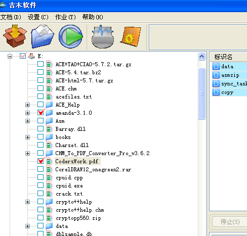
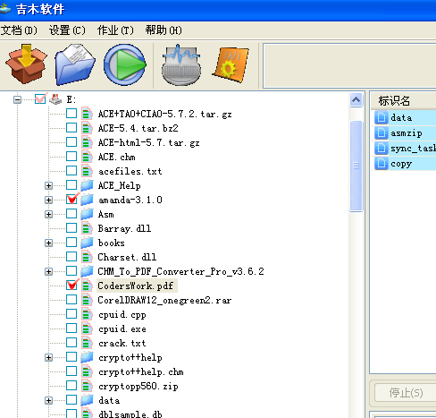
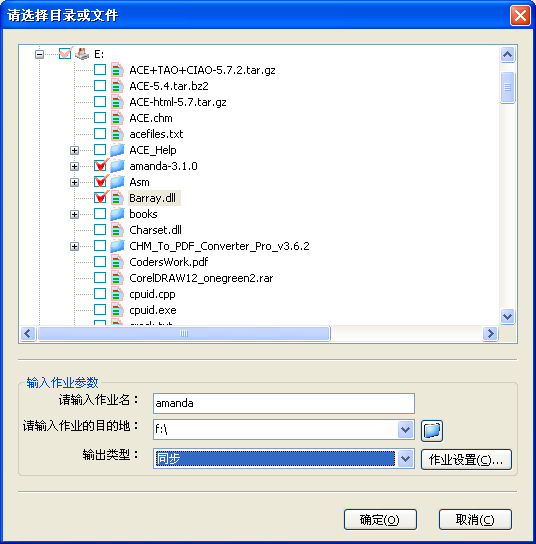
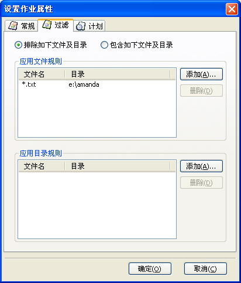

生成复制任务（快速创建）
| 1. 选择需要复制的数据： | 选择你要复制的数据源。数据源可以选择多个，包括目录及文件。  |
| 2. 选择需要作业的名字及目的地： | 给任务命并且选择复制的目的地。 |
| 3. 执行作业： | 点击“快速创建则开始执行。” |
生成复制任务（常规创建）
| 1. 打开创建对话框： | 在工具栏上点击创建按钮，或者在“文件”菜单中选择“创建作业”，选择需要复制的数据源，并填入相应的作业名以及作业目的地：  |
| 2. 设置任务选项： | 你可以给作业设置选项，以确定任务的执行时间，文件过滤条件以及其他相关的选择，要查看不同的选项的作业，请参考这里  |
| 3. 执行作业： | 点击作业对话框中的“确定”，完成创建，“取消”，则不创建作业。 |